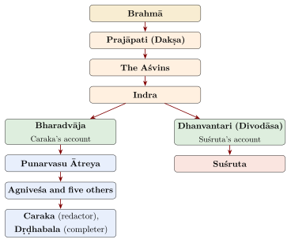
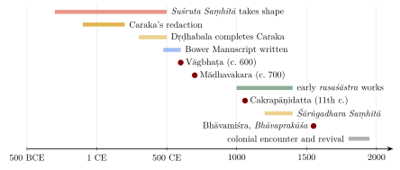
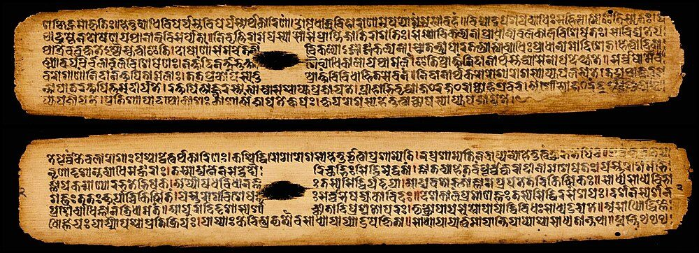
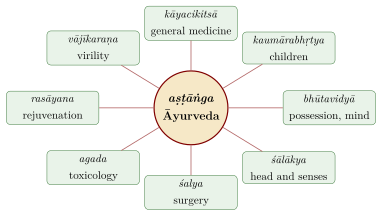
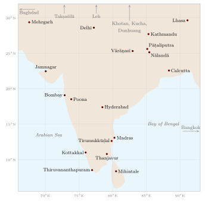

Chapter 1: Āyurveda: Its Sources and Its History¶
hitāhitaṃ sukhaṃ duḥkham āyus tasya hitāhitam
mānaṃ ca tac ca yatroktam āyurvedaḥ sa ucyate
That in which wholesome and unwholesome, happy and unhappy life,
what is good and bad for life, and its measure are taught
is called Āyurveda.
— Caraka Saṃhitā, Sūtrasthāna 1.41
1.1 What Is Āyurveda?¶
Āyurveda, “the knowledge (veda) of life (āyus)”, is the name the learned medical tradition of India gave itself. Its classical form is preserved in a body of Sanskrit compendia (saṃhitā), the oldest of which—the works associated with Caraka and Suśruta—took shape in the centuries around the beginning of the common era and were revised and supplemented for several hundred years after that. Those works were in turn summarised, commented upon, adapted and extended in a literature that runs without a break to the present day, in Sanskrit and in the regional languages of South Asia, and that travelled with Buddhist monks and merchants to Central Asia, Tibet, China and South-east Asia.
The verse quoted at the head of this chapter (Ca.Sū. 1.41) defines the subject broadly. Āyurveda is concerned not only with disease but with life as a whole: with what is wholesome (hita) and unwholesome (ahita) for it, with a happy (sukha) and an unhappy (duḥkha) life, and with its “measure” (māna), that is, its span. The next verse defines life itself:
Caraka Saṃhitā, Sūtrasthāna 1.42
śarīrendriyasattvātmasaṃyogo dhāri jīvitam
nityagaś cānubandhaś ca paryāyair āyur ucyate
Life (āyus) is the union of body, senses, mind and self. Its synonyms are dhāri (that which sustains), jīvita (living), nityaga (the ever-moving) and anubandha (continuity).
The purpose of the science is stated plainly near the end of Caraka’s Sūtrasthāna: “its purpose is to protect the health of the healthy and to relieve the disorder of the sick” (prayojanaṃ cāsya svasthasya svāsthyarakṣaṇam āturasya vikārapraśamanaṃ ca, Ca.Sū. 30.26). The double orientation—towards keeping well as much as towards curing—runs through the whole tradition, and explains the space the compendia give to daily and seasonal regimen, diet and conduct as well as to therapeutics.
Key terms
-
Saṃhitā — a compendium; the name of the great medical treatises (Caraka Saṃhitā, Suśruta Saṃhitā).
-
Sthāna — a “section” of a compendium (Sūtrasthāna, Nidānasthāna and so on).
-
Vaidya or bhiṣaj — the physician.
-
Doṣa — one of the three “faults” or regulatory principles of the body: vāta, pitta and kapha (Chapter 2).
-
Svastha — healthy; literally, “established in oneself”.
1.1.1 Health and Disease¶
Two classical definitions of health are often quoted. Caraka defines disease and health in terms of balance:
Caraka Saṃhitā, Sūtrasthāna 9.4
vikāro dhātuvaiṣamyaṃ sāmyaṃ prakṛtir ucyate
sukhasaṃjñakam ārogyaṃ vikāro duḥkham eva ca
Disorder is imbalance of the bodily constituents; their balance is called the natural state. Health is what is called happiness, and disorder is suffering.
The Suśruta Saṃhitā gives a fuller description of the healthy person:
Suśruta Saṃhitā, Sūtrasthāna 15.41 (15.48 in some editions)
samadoṣaḥ samāgniś ca samadhātumalakriyaḥ
prasannātmendriyamanāḥ svastha ity abhidhīyate
One whose doṣas are balanced, whose digestive fire is balanced, whose tissues and the functions of the waste products are balanced, and whose self, senses and mind are clear and content, is called healthy (svastha).
Modern writers often compare this verse with the definition in the Constitution of the World Health Organization (1946, in force 1948): “a state of complete physical, mental and social well-being and not merely the absence of disease or infirmity”. The comparison is useful as an analogy—both definitions refuse to equate health with the mere absence of disease—but the two belong to different worlds. Suśruta’s definition is framed in the terms of humoral physiology (doṣa, agni, dhātu, mala); the WHO definition was a political and social statement of the post-war period. Neither “anticipates” the other.
1.2 The Person as the Subject of Medicine¶
The compendia are explicit about what medicine is about. Caraka describes the living being as a tripod:
Caraka Saṃhitā, Sūtrasthāna 1.46
sattvam ātmā śarīraṃ ca trayam etat tridaṇḍavat
lokas tiṣṭhati saṃyogāt tatra sarvaṃ pratiṣṭhitam
Mind, self and body—these three are like a tripod. The living world stands by their combination, and everything rests on it.
This combination, the next verse says, is the “person” (pumān), and it is for the person that the science has been revealed. In the Śārīrasthāna, Caraka gives another analysis drawn from philosophical discussion: “the five elements beginning with space, with consciousness as the sixth, are the constituents called the person” (khādayaś cetanāṣaṣṭhā dhātavaḥ puruṣaḥ smṛtaḥ, Ca.Śā. 1.16). The body is made of the five great elements (pañcamahābhūta); what makes it a living person is the presence of consciousness.
Closely related is the doctrine that the person is “equal to the world” (lokapuruṣasāmya): “whatever particular entities there are in the world, there are as many in the person” (Ca.Śā. 5.3). The same elements and qualities that make up the external world make up the body, and the same principles govern the action of foods and drugs on it. This is the theoretical basis of Āyurvedic pharmacology (Chapter 6).
1.3 Three Kinds of Therapy and Three Supports of Life¶
In a chapter devoted to the “three desires” (Ca.Sū. 11), Caraka distinguishes three kinds of remedy (trividham auṣadham, Ca.Sū. 11.54; Table 1.1):
| Kind | What it comprises in the text |
|---|---|
| Daivavyapāśraya (“relying on the divine”) | Mantras, herbs worn as amulets, gems, auspicious rites, offerings and oblations, observances, expiation, fasting, rites for well-being, prostration and pilgrimage |
| Yuktivyapāśraya (“relying on reasoning”) | The rational planning of diet (āhāra) and drugs (auṣadha) |
| Sattvāvajaya (“mastery of the mind”) | “Restraint of the mind from harmful objects” (ahitebhyo ’rthebhyo manonigrahaḥ) |
The list is a useful corrective to two modern misreadings. It shows, first, that classical Āyurveda did not separate the “rational” from the “religious”: ritual and mantra stand alongside diet and drugs as recognised forms of treatment. It shows, second, that the tradition recognised the mind as a site of therapy. Sattvāvajaya has often been compared with modern psychotherapy. As a comparison it can be illuminating, but it should not be pressed: the text gives no technique of the kind that defines cognitive or behavioural therapy, and elsewhere names the means of treating the mind as “knowledge, understanding, fortitude, memory and concentration” (jñānavijñānadhairyasmṛtisamādhibhiḥ, Ca.Sū. 1.58).
In the same chapter Caraka names three “supports” (upastambha) of life: food (āhāra), sleep (svapna) and continence or regulated sexual life (brahmacarya) (Ca.Sū. 11.35). Health depends on using each of them properly; the later chapters on regimen elaborate what that means.
1.4 The Traditional Accounts of Origin¶
Each of the two great compendia opens with an account of how medical knowledge came to human beings. The accounts are myths of authority: they place the teaching in a line of transmission reaching back to the creator god, and so explain why it is to be trusted. They are not historical records, but they matter for understanding how the tradition saw itself.
1.4.1 Caraka’s Account¶
In the first chapter of the Caraka Saṃhitā, great sages, distressed that disease had become an obstacle to austerity, study, continence and religious observance, assemble on the flank of the Himālaya. Brahmā had first “remembered” Āyurveda and taught it to Prajāpati Dakṣa; Dakṣa taught it to the twin Aśvins, the physicians of the gods; and the Aśvins taught it to Indra. The sages therefore send Bharadvāja to Indra, who teaches him the science; Bharadvāja returns and teaches the assembled sages. Among them, Punarvasu Ātreya, out of compassion for living beings, teaches it to six disciples—Agniveśa, Bheḍa (Bhela), Jatūkarṇa, Parāśara, Hārīta and Kṣārapāṇi—each of whom composes a treatise (tantra). Agniveśa’s treatise, the text says, was the first and the best, and it is this treatise that Caraka later “redacted” and Dṛḍhabala completed (Ca.Sū. 1).
Of the six treatises, only Agniveśa’s (as the Caraka Saṃhitā) and an incomplete Bheḍa Saṃhitā, preserved in a single damaged manuscript in the Sarasvati Mahal Library at Thanjavur, survive as books; the others are known from quotations. The surviving Hārīta Saṃhitā is a much later work that borrows the old name (Meulenbeld 1999–2002).
1.4.2 Suśruta’s Account¶
The Suśruta Saṃhitā gives a parallel genealogy for surgery. Brahmā taught the science to Prajāpati, Prajāpati to the Aśvins, the Aśvins to Indra, and Indra to Dhanvantari, who was born on earth as Divodāsa, king of Kāśī (Vārāṇasī). Suśruta and other sages come to Divodāsa Dhanvantari in his hermitage and ask to be taught; the Saṃhitā is presented as his teaching, received and transmitted by Suśruta (Su.Sū. 1). The two lines of transmission are set out in Figure 1.1. The text also calls Āyurveda an “auxiliary limb” (upāṅga) of the Atharvaveda, and Caraka likewise tells the physician to declare his allegiance to that Veda (Ca.Sū. 30.21).

1.4.3 Dhanvantari¶
In the Purāṇas and epics, Dhanvantari is the physician of the gods who rises from the churning of the ocean of milk (samudramanthana) carrying the pot of nectar (amṛta); he is often regarded as a partial incarnation of Viṣṇu. Modern images, like the one in Figure 1.2, show him four-armed, holding the nectar pot, a conch, a discus and a leech or medicinal herbs. The Purāṇic figure and the Kāśī king of the Suśruta Saṃhitā are distinct traditions that later writers have often run together. From 2016 the Government of India observed National Ayurveda Day on Dhanvantari’s festival, Dhanteras (Dhanatrayodaśī), which falls in October or November; since 2025 it has been held on a fixed date, 23 September.

1.5 Before the Compendia¶
1.5.1 Prehistory and the Indus Civilisation¶
The earliest physical evidence of a healing practice in South Asia is not textual. At the Neolithic site of Mehrgarh in Baluchistan, eleven drilled molar crowns from nine adults, dated to roughly 7500–9000 years ago, show that teeth were bored with flint drill-heads, apparently as a form of dentistry (Coppa et al. 2006). For the Indus (Harappan) civilisation of the third millennium BCE there is no evidence of medical texts—the Indus script is undeciphered—and claims that particular objects were “surgical instruments” are speculative. Continuities between Harappan and later Indian medicine have been proposed but cannot be demonstrated.
1.5.2 Healing in the Vedas¶
The Vedic hymns are the earliest Indian texts to speak about disease and healing. The Ṛgveda (c. 1500–1200 BCE for its core) praises the Aśvins, Rudra and the waters as healers. Its hymn to the plants (RV 10.97) begins by speaking of the “hundred and seven forms” (śataṃ dhāmāni sapta ca) of the brown plants and addresses them as mothers and goddesses: “rejoice, O plants, flowering and fruitful” (oṣadhīḥ prati modadhvam puṣpavatīḥ prasūvarīḥ, RV 10.97.3). The figure 107 is a poetic number, not a count of medicinal species.
The Aśvins in particular are celebrated as healers in a series of mythical deeds: they restore sight to the blind and youth to the aged sage Cyavana, rescue the drowning, and give the warrior woman Viśpalā, whose leg had been cut off in battle, a leg of iron (RV 1.116.15). Rudra, otherwise a fearsome god, is invoked as “the best physician among physicians” (RV 2.33.4). These are myths, not records of medical practice; claims that they show prosthetic surgery or eye operations in the Vedic period read far too much into them.
The Atharvaveda (its main collection probably c. 1200–1000 BCE) contains many healing charms: against takman (a fever, probably including malaria), yakṣma (a wasting disease), kilāsa (a skin disease), jaundice, worms, wounds and poisons. In these hymns disease is usually the work of demons, sorcery, divine anger or “worms”, and healing combines spells, amulets, washing and the application of plants. Kenneth Zysk has shown that this “religious healing” differs in kind from the rational, humoral medicine of the later compendia; the later tradition’s claim to be an “auxiliary” of the Atharvaveda is a claim to Vedic authority rather than evidence of direct descent (Zysk 1985).
1.5.3 Śramaṇa Medicine and the Buddhist Monasteries¶
Zysk has argued that the decisive step towards the empirical, humoral medicine of the compendia was taken among the heterodox ascetics (śramaṇa) of the last centuries BCE, who wandered outside the ritual purity rules of brahmanical society and gathered medical knowledge as they travelled (Zysk 1991). The thesis has been influential, but it remains debated. Its evidence comes largely from Buddhist monastic rules, which show how monks cared for one another rather than where medical theory came from, and brahmanical learning was also capable of absorbing and systematising empirical knowledge; how the humoral theory itself arose is still unknown. For medical practice in this period, however, the Buddhist monastic code is the best evidence. The Pali Vinaya has a whole section on medicines (the Bhesajjakkhandhaka), listing the five basic medicines allowed to monks—ghee, fresh butter, oil, honey and molasses—and numerous roots, astringents, leaves, fruits, resins and salts, as well as ointments, nasal medication, sweating and bloodletting. Buddhist monasteries cared for sick monks and in time became centres of medical learning; the Chinese pilgrim Yijing, who lived in India in the late seventh century, describes Indian medical practice in detail.
1.5.4 Medicine and the Buddha’s Teaching¶
Medical imagery runs through early Buddhism. The Buddha is often called the “great physician” (mahābhiṣaj), and his teaching is compared to medicine: suffering is the disease, craving its cause, nirvāṇa the cure and the noble eightfold path the remedy. Some scholars have suggested that the structure of the four noble truths reflects a medical model of diagnosis, cause, prognosis and treatment; whether the influence ran from medicine to Buddhism or the reverse, or whether both drew on a common pattern of thought, is uncertain. In Mahāyāna Buddhism the “Medicine Buddha” (Bhaiṣajyaguru) became a focus of devotion across Asia. Yijing, who studied at Nālandā, gives the earliest outside description of the eight branches of Indian medicine and remarks that physicians who mastered them were well rewarded.
1.5.5 Jīvaka Komārabhacca¶
The most famous physician of the early Buddhist texts is Jīvaka Komārabhacca, whose story is told in the Cīvarakkhandhaka of the Pali Vinaya (Mahāvagga 8). A foundling of Rājagaha raised by a prince, Jīvaka studies medicine for seven years with a renowned teacher at Takkasilā (Takṣaśilā). When he asks how long his course is to last, the teacher sends him out to search the country for a yojana around for any plant that is not medicinal; Jīvaka returns saying he has found none, and is told that his training is complete. He goes on to treat King Bimbisāra of Magadha, a merchant of Rājagaha (by an operation on the head), a merchant’s son with a twisted bowel, and King Pajjota of Ujjenī, and becomes physician to the Buddha and the monastic community. Versions of the story exist in the Vinayas of other Buddhist schools and in Chinese and Tibetan; Jīvaka is honoured to this day as the patron of traditional medicine in Thailand (Zysk 1991; Salguero 2014). The stories are legendary, but they are the earliest Indian accounts of a professional physician, and they show that Takṣaśilā was remembered as a place of medical study. They do not show that it was a “university” in the modern sense.
1.5.6 Aśoka¶
The second Rock Edict of Aśoka (r. c. 268–232 BCE) records that the king had provided “two kinds of medical treatment” (cikisā), for human beings and for animals, throughout his own dominions and in neighbouring kingdoms in the south and in the Hellenistic west, and that medicinal herbs, roots and fruits had been imported and planted wherever they were not available. The edict is the earliest epigraphic evidence in India of royal provision for medical care. It does not say that the king founded “hospitals”, and the form the provision took is not known.
1.5.7 Medicine in Other Early Texts¶
Physicians and remedies also appear in texts that are not medical works. The Arthaśāstra, the Sanskrit treatise on statecraft attributed to Kauṭilya but composite in its present form (c. 50 BCE–300 CE; Olivelle places the composition of the Kauṭilyan text c. 50–125 CE and its final redaction c. 175–300 CE), mentions physicians attached to the royal household and the army, rules on the testing of the king’s food for poison, and penalties for physicians whose negligent treatment causes harm; its last book collects “secret” recipes for poisons and antidotes (Olivelle 2013). The epics and Purāṇas refer to physicians, to the eight-limbed science and to Dhanvantari, and some Purāṇas, such as the Agni and Garuḍa, contain whole chapters of medical prescriptions copied from the medical literature. The Kāmasūtra contains recipes for aphrodisiacs and charms. Such passages show that medical knowledge circulated widely among the educated, but they do not add much to what the compendia themselves tell us.
The Jain tradition, which shared the ascetic background that Zysk identifies, produced its own medical literature. Its best-known work, the Kalyāṇakāraka of Ugrāditya (9th century, in the Deccan), adapts the classical teaching to Jain ethics, above all by excluding meat and alcohol from its prescriptions. Buddhist authors also wrote medical works that were later translated into Tibetan and other languages, among them the Siddhasāra of Ravigupta (7th century) and a Yogaśataka attributed to Nāgārjuna (Meulenbeld 1999–2002).
1.6 Teaching, Practice and Institutions¶
Medicine was taught in the household of a teacher, to a small number of students who lived with him, served him and learned the texts by heart before they were allowed to practise. Caraka’s account of this education (Ca.Vi. 8) is the fullest description of professional training to survive from ancient India. The student was to choose a text that was complete, clear and well-reasoned, and a teacher who was learned, experienced, skilful, kind and free from pride; he was then to learn by study, by teaching others and by discussion with experts. Knowledge passed within families as well as from teacher to pupil, and many later lineages of physicians traced their learning back through generations. The texts were copied on palm leaf or birch bark, and later on paper, by students and professional scribes; the large number of surviving manuscripts—tens of thousands of medical manuscripts are recorded in Indian and European libraries—shows how widely the literature was used.
Physicians appear occasionally in Sanskrit literature. In Bāṇa’s Harṣacarita (7th century), the physicians attending the dying king Prabhākaravardhana include a young man named Rasāyana, trained in the eight branches, who, recognising that the king cannot be saved, throws himself into a fire rather than see him die—a literary episode that shows both the prestige of the royal physician and the weight of his responsibility. Inscriptions record grants of land to physicians and to families of physicians, and some medieval physicians held high office at court.
Physicians earned their living from patients. The compendia expect them to be paid and to prosper, but they condemn the physician who treats only for money: Caraka says that one who sells treatment as a trader sells goods gives up a heap of gold for a heap of dust, while one who treats out of compassion obtains the highest reward (Ca.Ci. 1.4). Royal patrons employed court physicians, and armies took physicians on campaign.
Institutions for the care of the sick are attested from the early centuries CE. The Chinese pilgrim Faxian, who visited Pāṭaliputra in the early fifth century, describes houses where the poor, the crippled and the sick of the region received food and medicine free of charge, supported by the leading families of the city. Buddhist monasteries cared for sick monks and sometimes for lay people. Medieval inscriptions record endowments for hospitals attached to temples and monasteries. An inscription of the Cōḻa king Vīrarājendra at Tirumukkūḍal in Tamil Nadu (1069 CE) provides for a hospital with fifteen beds, a physician, a surgeon, nurses and other servants, and lists the medicines to be kept in stock. In Cambodia, at the end of the twelfth century, the Buddhist king Jayavarman VII founded more than a hundred hospitals, whose foundation inscriptions in Sanskrit describe their staff and supplies. These are among the best-documented hospitals of the medieval world. In Sri Lanka, the remains of monastic hospitals of the first millennium CE, with stone troughs in which patients were immersed in medicinal oils, have been excavated at Mihintale and other sites.
1.7 The Classical Compendia and Their Dates¶
The Caraka and Suśruta compendia are composite works. Each contains layers written at different times, and each was revised by later hands; the traditional attributions to individual sages compress centuries of work into a single name. The dates given in this volume follow the critical history of G. Jan Meulenbeld and the summaries of Dominik Wujastyk (Meulenbeld 1999–2002; Wujastyk 2003a). They are approximate (Table 1.2 and Figure 1.3), and specialists continue to debate them.
| Work | Academic dating (approximate) | Traditional attribution |
|---|---|---|
| Caraka Saṃhitā | Agniveśa’s lost treatise is undatable. Caraka’s redaction probably between c. 100 BCE and c. 200 CE. Dṛḍhabala, of Pañcanada (perhaps in Kashmir), supplied 41 chapters about the 4th–5th century CE. | Teaching of Punarvasu Ātreya to Agniveśa; Caraka is sometimes identified, on the basis of a Buddhist story preserved in Chinese translation, with a physician of the Kuṣāṇa king Kaniṣka. |
| Suśruta Saṃhitā | An older core, perhaps from the last centuries BCE, was revised and supplemented (above all by the Uttaratantra); the work had approximately its present form by c. 500 CE. | Teaching of Divodāsa Dhanvantari of Kāśī to Suśruta; a “Nāgārjuna” is named by the commentator Ḍalhaṇa as a redactor. |
| Aṣṭāṅgasaṃgraha and Aṣṭāṅgahṛdaya | Vāgbhaṭa, of Sindh, c. 600 CE. Whether one author wrote both works is debated. | Vāgbhaṭa, son of Siṃhagupta. |
| Bheḍa Saṃhitā | Undated; contains old material. Single incomplete manuscript. | One of Ātreya’s six disciples. |
| Kāśyapa Saṃhitā | c. 7th century CE in its extant form (Meulenbeld). | Teaching of Mārīca Kaśyapa, redacted by Vṛddhajīvaka. |

How are such dates established? Few Sanskrit works state when they were written, so historians use indirect evidence. A text must be later than the authors and works it quotes and earlier than those that quote it; commentators such as Cakrapāṇidatta and Ḍalhaṇa, whose dates are known from their patrons or from inscriptions, therefore provide fixed points. Dated manuscripts, such as the Nepalese manuscript of the Suśruta Saṃhitā and the Bower Manuscript, set upper limits. Translations into datable languages—Tibetan, Chinese and Arabic—and references in foreign works give further anchors. Within the texts, the language, metre, technical vocabulary, the drugs and diseases mentioned, and the philosophical ideas discussed all help to place a work relative to others. The results are ranges rather than precise dates, and they are revised as new evidence appears.
The traditional practice of dating these authors to the second millennium BCE or earlier, which is still common in popular books, has no basis in evidence. Nor do the dates matter to the value of the works: their importance lies in their content and in their long use, not in an inflated antiquity.
The Caraka, Suśruta and Aṣṭāṅgahṛdaya are known together as the bṛhattrayī, the “great triad”. A “lesser triad” (laghutrayī) of later works—the Mādhavanidāna (c. 700 CE) on diagnosis, the Śārṅgadhara Saṃhitā (c. 13th–14th century) on pharmacy, and the Bhāvaprakāśa of Bhāvamiśra (16th century)—became the practical handbooks of later practice. These and other later works are discussed in Chapter 5.
1.7.1 The Bower Manuscript¶
The oldest surviving manuscript of an Indian medical text was found far from India. In 1890 a British officer, Hamilton Bower, bought a bundle of birch-bark leaves near Kucha, on the northern Silk Road in what is now Xinjiang. Edited and translated by A. F. Rudolf Hoernle between 1893 and 1912, the “Bower Manuscript” turned out to be a collection of seven Sanskrit texts written in a late Brāhmī (Gupta) script, probably in the late fifth or sixth century CE (Hoernle 1893–1912). Three of the texts are medical: a treatise on garlic (laśuna) and its uses, a large formulary called the Nāvanītaka (“Cream”), and a shorter collection of prescriptions. The remaining four are two manuals of dice divination and two copies of a Buddhist protective spell, the Mahāmāyūrī. The Nāvanītaka draws on authorities named in the classical tradition—among them Ātreya, Hārīta, Jatūkarṇa, Kṣārapāṇi, Parāśara, Bheḍa and Suśruta—and so shows that their teachings circulated in written form, and among Buddhist communities in Central Asia, within a few centuries of the compendia themselves (Wujastyk 2003a). A palm-leaf manuscript is shown in Figure 1.4.


1.8 The Physician in Society: Caste, Gender and Ethics¶
The compendia were written by and for a particular social group, and they reflect its assumptions. An honest account of the tradition has to say so.
1.8.1 Who Could Study Medicine¶
Caraka states that Āyurveda is to be studied by brāhmaṇas, kṣatriyas and vaiśyas: by brāhmaṇas out of compassion for living beings, by kṣatriyas for the protection of their subjects, and by vaiśyas for a livelihood (Ca.Sū. 30.29). The Suśruta Saṃhitā prescribes initiation for students of the same three classes, adding that “some” allow a śūdra of good family and character to be taught, without the Vedic mantras (Su.Sū. 2). The ideal student and physician are, in every case, men. Teaching was by initiation into a teacher’s household, and knowledge was valued partly because it was restricted.
The brahmanical law books, on the other hand, regarded physicians with suspicion. The Mānava Dharmaśāstra (c. 2nd century CE) lists physicians among those who are not to be invited to ancestral offerings (Manu 3.152) and treats food given by a physician as impure; elsewhere it assigns medicine as the occupation of the Ambaṣṭha, a “mixed” caste (Manu 10.47) (Olivelle 2005). Zysk reads this hostility as a sign that medicine, which required contact with the sick, the dying and the impure, developed among groups outside brahmanical orthodoxy and was later brought within it (Zysk 1991). In later centuries medicine became the hereditary occupation of particular communities—for example the Vaidyas of Bengal and, in Kerala, Nampūtiri brāhmaṇa families as well as Īḻava physicians—while countless healers outside these groups, including bonesetters, snakebite specialists, midwives and tribal herbalists, practised without the Sanskrit texts.
1.8.2 Women in the Medical Texts¶
Women appear in the compendia almost entirely as patients, mothers, wet-nurses and objects of male desire. The texts give detailed attention to conception, pregnancy, childbirth and the diseases of the female reproductive tract (Chapter 8), but they do so largely from the point of view of producing healthy—and preferably male—offspring. Rites for obtaining a son (puṃsavana) are prescribed in the early months of pregnancy, and the rules for timing intercourse to obtain a son rather than a daughter are explained with humoral reasoning. Rahul Peter Das’s study of these passages shows how far the theory of conception rests on assumptions about the female body that the texts never question (Das 2003). In practice, the management of normal childbirth was left to experienced women, whose knowledge the texts mention but do not record. Modern Indian law prohibits sex-selection, and these passages should be read as history.
1.8.3 Medical Ethics¶
The compendia nevertheless contain a serious and humane ethics of practice. Caraka’s description of the “four feet” of treatment—physician, drugs, attendant and patient—requires the physician to have clear knowledge of the texts, wide practical experience, skill and cleanliness (Ca.Sū. 9.6). In the Vimānasthāna the teacher’s address to a newly initiated student (Ca.Vi. 8.13) requires him to be celibate, truthful, vegetarian and free of envy; to strive for the relief of the sick “with all his being”, even at the cost of his own life; never to wish a patient harm; never to make advances to women of the patient’s household; and never to disclose what happens in the patient’s house. The same passage also tells him not to treat those who are hated by the king or who hate the king, and not to treat a woman in the absence of her husband or guardian. The address continues with practical rules of conduct. The physician is to enter a patient’s house only when invited and accompanied by someone known to the household; on entering, he is to keep his attention, his speech and his mind on the patient alone; he is not to speak of the household’s affairs outside it; and even if he perceives that the patient’s life is short, he is not to say so where it might harm the patient or others. He is to be modestly dressed, to avoid boasting of his learning, and to keep studying throughout his life, since the science is without end. Comparisons with the Hippocratic Oath (which is older, of the fifth or fourth century BCE) are natural, but the two texts reflect their own societies and neither derives from the other. Dagmar Wujastyk’s study of these passages shows how closely the compendia’s ethics is bound up with etiquette and with the physician’s own interest: the rules on whom to treat, how to behave in a patient’s house and when to withdraw protected the physician’s reputation and livelihood as well as the patient (Wujastyk 2012).
1.8.4 The Physician and the Law¶
The treatise on statecraft and the law books regulated physicians as they regulated other occupations, and their rules show how physicians were held to account. The Arthaśāstra, whose penalties for negligent physicians were mentioned above, sets them out precisely. It fines a physician who undertakes a treatment that puts the patient’s life at risk without first informing the authorities, if the patient dies, and it punishes more heavily a death or injury caused by a fault in the treatment itself (AŚ 4.1). It also requires a physician who treats a wound in secret to report it to the officials, since the wound may mark a criminal (AŚ 2.36) (Olivelle 2013). The law books lay down graded fines for physicians who treat wrongly: lower when the patient is an animal and higher when it is a human being (Manu 9.284), with Yājñavalkya adding a still higher fine when the patient is an officer of the king (Yājñavalkya 2.242). The Suśruta Saṃhitā requires a newly trained physician to obtain the king’s permission before he practises (Chapter 4), and its chapter on poisons makes the royal physician responsible for guarding the king’s food and drink against poisoners (Su.Ka. 1).
These rules treat the physician as accountable to the state and to the public, through fines and royal permission rather than through any professional body. How often they were enforced is unknown; no records of cases survive from the early period. The compendia add their own professional discipline, above all the rule that the physician should decline cases he cannot hope to cure (Section 10.4).
1.8.5 Medical Families and Patronage¶
Although the compendia describe teaching in a teacher’s household, in practice medicine passed most often from father to son. Many later authors name their fathers or uncles as their teachers, and manuscript colophons record lines of physicians over several generations. Medical knowledge was family property. It gave a lineage its living and its standing, and was often guarded by secrecy, so that a family’s special formulae could be lost when the line died out.
The Bengali physician communities illustrate the pattern. The Vaidyas (Baidyas) of Bengal claimed descent from the Ambaṣṭhas of the law books, and their rank among the castes was disputed for centuries, including in petitions to the colonial census. Many of the kavirājs who led the nineteenth-century revival in Calcutta came from such families, and they trained pupils in household schools before the colleges took over (Chapter 12). In Kerala the Aṣṭavaidya families (Section 5.3), and among Muslims the ḥakīm families of Delhi and Lucknow (Chapter 11), show the same pattern of hereditary practice.
Patronage came from kings, temples, monasteries and wealthy households. A physician in royal service could be richly rewarded: Cakrapāṇidatta’s father held office at the Pāla court. Grants of land supported physicians attached to temples and endowed institutions (Section 1.6). Most practitioners, however, lived on fees and gifts from patients in town and village, and their names survive, if at all, only in family memory.
1.9 The Eight Branches¶
From an early date the medical science was described as having eight “limbs” (aṣṭāṅga). Vāgbhaṭa gives the list in a single verse:
Aṣṭāṅgahṛdaya, Sūtrasthāna 1.5–6
kāyabālagrahordhvāṅgaśalyadaṃṣṭrājarāvṛṣān
aṣṭāv aṅgāni tasyāhuś cikitsā yeṣu saṃśritā
They say that its eight limbs, on which therapy rests, are: the body, children, seizers, the parts above the collar-bone, extraction, fangs, old age and virility.
| Branch | Literal sense | Scope |
|---|---|---|
| Kāyacikitsā | therapy of the body | General medicine: fevers, wasting, skin diseases, urinary disorders and other systemic disease |
| Kaumārabhṛtya | care of children | Paediatrics, with pregnancy, childbirth and the care of the newborn |
| Bhūtavidyā or grahacikitsā | science of spirits; treatment of “seizers” | Disorders attributed to possession by spirits and “seizers” (graha); much of what is now called psychiatry |
| Śālākya | the use of probes | Diseases of the eye, ear, nose, mouth, throat and head |
| Śalyatantra | extraction of foreign bodies | Surgery |
| Agadatantra or daṃṣṭrā | antidotes; fangs | Toxicology: snakebite, stings and poisons |
| Rasāyana or jarā | rejuvenation; old age | Regimens and preparations meant to promote longevity and vigour |
| Vājīkaraṇa or vṛṣa | making (a man) like a stallion | Virility and fertility (the texts are addressed to men) |

The Caraka Saṃhitā is above all a work of kāyacikitsā, and the Suśruta Saṃhitā of śalyatantra, though both range over the whole field (Figure 1.5). The branches are discussed in Chapters 3, 4 and 8.
1.10 Āyurveda and the Philosophical Schools¶
The compendia borrow concepts from the philosophical schools (darśana) and contribute to them in turn. The relationship is one of shared vocabulary and debate, not of simple derivation. From Sāṃkhya comes the account, in Caraka’s Śārīrasthāna, of the evolution of the world from primal matter (prakṛti) and of the three qualities sattva, rajas and tamas; but Caraka counts the constituents of the person differently from classical Sāṃkhya, and probably preserves an older stage of the school’s thought. From Vaiśeṣika comes the list of six categories—generality (sāmānya), particularity (viśeṣa), quality (guṇa), substance (dravya), action (karma) and inherence (samavāya) (Ca.Sū. 1.28)—which Caraka puts to work in a theory of how foods and drugs act (Chapter 2). With Nyāya he shares the vocabulary of argument. His Vimānasthāna contains one of the earliest surviving treatments of the rules of debate (vāda), with a list of technical terms that overlaps with, and is perhaps older than, the Nyāyasūtra (Chapter 3), and his means of knowledge (pramāṇa) are four: authoritative testimony, perception, inference and reasoning (yukti) (Ca.Sū. 11.17).
The medical works also engage Buddhist ideas, especially in Vāgbhaṭa, and Buddhist monasteries were among the places where medicine was taught and copied. The modern habit of calling Āyurveda and Yoga “sister sciences” is a twentieth-century coinage. The classical medical texts say little about yogic practice as a form of therapy, although Caraka’s Śārīrasthāna describes the powers of the accomplished yogin and the path to release (Chapter 3).
1.11 How Āyurveda Has Been Studied¶
The modern study of Indian medicine began in the colonial period. Early British accounts, such as Thomas Wise’s Commentary on the Hindu System of Medicine (Calcutta, 1845), presented the Sanskrit texts to European readers with a mixture of admiration and condescension. German Indologists brought philological rigour to the field: Julius Jolly’s survey Medicin (1901), later translated into English (Jolly 1951), remains a useful guide to the sources, and A. F. Rudolf Hoernle, the editor of the Bower Manuscript, published a pioneering study of the anatomy of the bones in the Sanskrit texts (Hoernle 1907). In India, Girindranath Mukhopadhyaya’s Surgical Instruments of the Hindus (Mukhopadhyaya 1913–1914) and his History of Indian Medicine (1923–1929), and P. C. Ray’s History of Hindu Chemistry (Ray 1902–1909), combined historical research with a nationalist concern to show that India had possessed a science of its own. The French scholar Jean Filliozat studied the doctrine of the humours and its relation to Greek medicine (Filliozat 1964), and Heinrich Zimmer’s lectures on Hindu Medicine brought the subject to a wider audience (Zimmer 1948).
The modern critical history of the field rests above all on G. Jan Meulenbeld’s History of Indian Medical Literature (Meulenbeld 1999–2002), a work of three volumes in five parts that surveys every known author and text, with a careful discussion of dates. Kenneth Zysk’s studies of Vedic and Buddhist medicine (Zysk 1985, 1991), Dominik Wujastyk’s translations and essays (Wujastyk 2003a, 2003b), and the work of anthropologists and historians on modern Āyurveda (Leslie 1976; Langford 2002; Wujastyk and Smith 2008; Banerjee 2009) have transformed our understanding in the last forty years. Indian scholars of Āyurveda, such as Priyavrat Sharma, have produced indispensable editions, translations and histories in Sanskrit, Hindi and English (Sharma 1981–1994). The history of medicine has also had its own institutions in India. The Indian Institute of History of Medicine at Hyderabad, founded in 1956 and now the National Institute of Indian Medical Heritage, collects manuscripts, publishes editions and catalogues, and has long issued a journal devoted to the subject; the Indian Journal of History of Science has published much of the specialist research. The editing of texts from manuscripts, discussed in Chapter 5, remains the foundation of all this work.
Two tendencies have distorted the popular picture. One, common in colonial writing, dismissed Indian medicine as superstition. The other, common in nationalist and much contemporary writing, claims that the ancient texts anticipated modern discoveries—the circulation of the blood, germ theory, genetics, plastic surgery—and dates them to remote antiquity. Neither does justice to the tradition. This volume tries to describe it as the critical scholarship of the last century has revealed it: as a remarkable achievement of its time, to be understood in its own terms.
1.12 A Note on Translation¶
Translating the technical vocabulary of the compendia is difficult, and many common English renderings mislead. Doṣa is often translated “humour”, which brings with it the associations of Greek medicine, or “bio-energy”, which is a modern invention; this volume usually leaves it untranslated. Dhātu is rendered “bodily constituent” or “tissue”, though the first of them, rasa, is a fluid. Srotas is “channel”, but the texts’ channels do not correspond to any one system of modern anatomy. Disease names pose particular problems. Kuṣṭha is often translated “leprosy”, but it covers many skin diseases; prameha is often equated with diabetes, but its twenty forms include many other conditions; rājayakṣman includes but is not identical with tuberculosis; unmāda is not “schizophrenia”. A modern name may be a useful hint, but a classical disease category should not be assumed to be the same as a modern diagnosis. The same caution applies to drug names (Chapter 6).
1.13 Reading the Classical Claims¶
The classical texts describe hundreds of diseases and thousands of remedies, and they claim success for many of them. These claims are part of the historical record, and this volume reports them. They are not, however, evidence that the remedies work. The compendia themselves insist that knowledge must be tested by perception and inference; modern medicine has developed far more reliable ways of doing so, chiefly the controlled clinical trial. Where modern evidence exists it is mentioned, and it is often mixed or negative. Where a remedy contains toxic metals or plants, or where a procedure carries real risks, a safety note is given.
Health and Safety Note
This book is a history, not a guide to treatment, and gives no doses or instructions for any remedy. When the texts say that a remedy cures a disease, that is a report of what they say, not evidence that the remedy is effective or safe. The safety questions raised by Ayurvedic medicines today are set out in Section 12.7.
1.14 Plan of the Volume¶
The principal places named in the volume, from Mehrgarh to Kottakkal in Kerala, are shown in Figure 1.6; arrows point towards those beyond it, such as Kucha on the Silk Road.

Chapter 2 sets out the theory of the body: the elements, the three doṣas, the seven dhātus, digestion and the regimen of the day and the seasons. Chapters 3 to 5 introduce the great compendia and the later literature, including Suśruta’s anatomy and the count of the bones, and the transmission of the texts in manuscript, translation and print. Chapters 6 to 8 describe materia medica and pharmacy, the purification therapies and the clinical branches, including the classical gynaecology, obstetrics and children’s medicine, contagion and epidemics, and madness and epilepsy. Chapter 9 gives a history of rasaśāstra, the mercurial and metallic pharmacy of the medieval period, and its dangers. Chapter 10 discusses diagnosis and prognosis. Chapter 11 describes the Siddha, Unani and Sowa-Rigpa traditions on their own terms—their texts, theories and modern institutions—and the exchanges among them, together with local health practices. Chapter 12 follows Āyurveda through the colonial period, the committees, textbooks and registers that made it a modern profession, and into the present, and assesses the evidence and the safety questions that its modern use raises.
Summary
Āyurveda is the learned medicine of India as it was set down in Sanskrit compendia that took shape around the beginning of the common era and were revised for centuries afterwards. The evidence from before them—Vedic charms, Buddhist monastic rules, the stories of Jīvaka and Aśoka’s edict—shows healing practices but not yet the humoral system. The compendia themselves are composite works of an upper-caste, male profession, whose ethics joined care for the patient with care for the physician’s standing; this volume dates them by evidence rather than by tradition, and reads their claims as history.
Further Reading¶
Wujastyk’s anthology is the best first introduction to the classical texts in translation (Wujastyk 2003a); Meulenbeld is the standard reference on authors, texts and dates (Meulenbeld 1999–2002). On Vedic and Buddhist medicine see Zysk (Zysk 1985, 1991); on gender and conception, Das (Das 2003); on Manu’s view of physicians, Olivelle’s translation (Olivelle 2005).